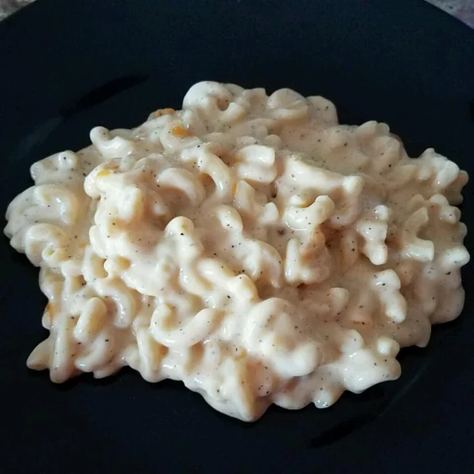

Simple Macaroni and Cheese
Recipe source: Allrecipes.com | Simple Macaroni and Cheese
Description
This is a recipe of a very simple Mac n Cheese which may or may not be simple, depending on the ingredient you have.

Ingredients
- 1 (8 ounce) box elbow macaroni
- ¼ cup butter
- ¼ cup all-purpose flour
- ½ teaspoon salt
- ground black pepper to taste
- 2 cups milk
- 2 cups shredded Cheddar cheese
Steps
- Bring a large pot of lightly salted water to a boil.
Cook elbow macaroni in the boiling water, stirring occasionally
until cooked through but firm to the bite, 8 minutes. Drain.
- Melt butter in a saucepan over medium heat; stir in flour, salt,
and pepper until smooth, about 5 minutes. Slowly pour milk into butter-flour
mixture while continuously stirring until mixture is smooth and bubbling,
about 5 minutes. Add Cheddar cheese to milk mixture and stir
until cheese is melted, 2 to 4 minutes.
- Fold macaroni into cheese sauce until coated.